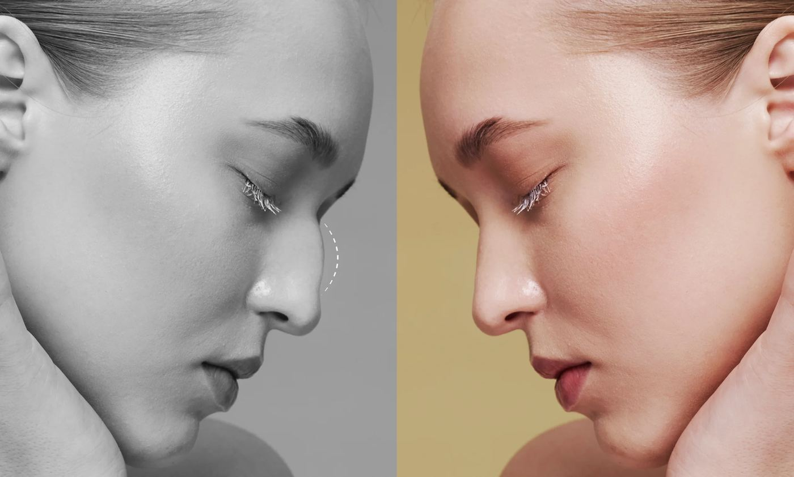
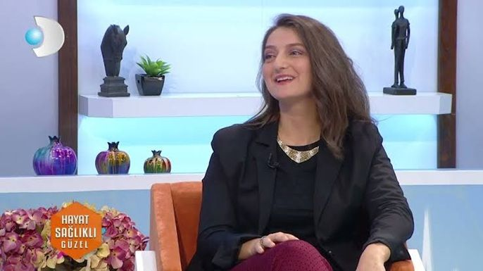
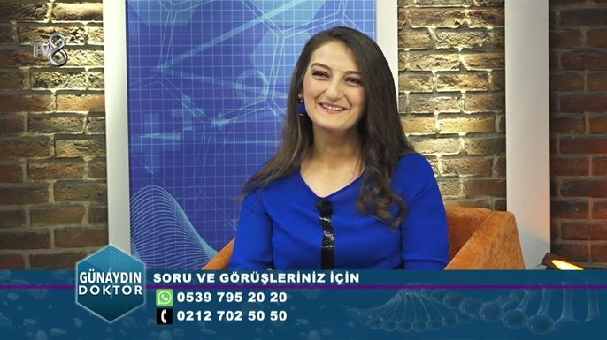
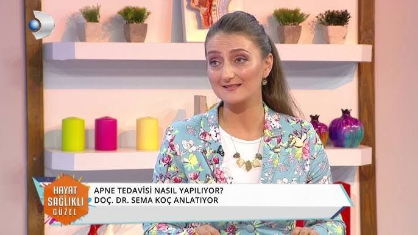
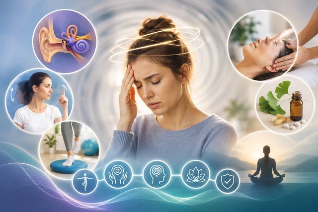
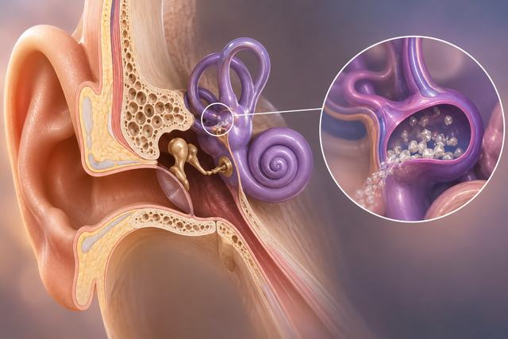
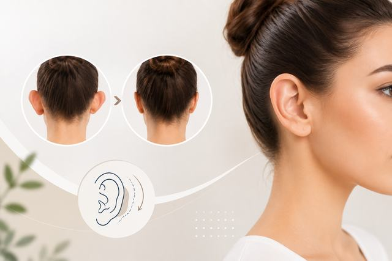

“23 aylık kızım sevgili hocamız sayesinde nefes alıyor. Geniz etimizin aşırı büyüklüğünden dolayı bademciklerimizde de büyüklük oluşmuş. Bir anne olarak kapıdan girdim, anne hisseder; bana verdiğiniz o güven için teşekkür ederim.”
Doç. Dr. Sema Koç · KBB ve Baş-Boyun Cerrahisi · Antalya
Yirmi yılı aşkın deneyim, akademik titizlikle.
Rinoplasti, kulak burun boğaz hastalıkları, baş-boyun cerrahisi, vertigo ve odyoloji alanlarında tanı ve tedavi hizmetleri. Muayene ve değerlendirme randevusu için kliniğimizle iletişime geçebilirsiniz.
Görüşmeler Türkçe, İngilizce, Rusça ve Ukraynaca yapılabilmektedir.
0Yıl Hekimlik Deneyimi
0Google Puanı
0Google Yorumu
0Uzmanlık Alanı
Gazi Üniversitesi Tıp Fakültesi2001 · Tıp Doktoru
Da Vinci Transoral Robotik Cerrahi2012 · Eğitim
Doçentlik, Kulak Burun Boğaz2013 · Akademik Unvan
Odyoloji Yüksek Lisansı2014 · Uzman Odyolog
Hakkında
Akademik birikim, yirmi yılı aşkın klinik deneyim
Doç. Dr. Sema Koç, 2001 yılında Gazi Üniversitesi Tıp Fakültesi'nden mezun oldu ve uzmanlık eğitimini Kulak Burun Boğaz alanında tamamladı.
2012 yılında Da Vinci Transoral Robotik Cerrahi eğitimini tamamladı, 2013 yılında KBB alanında doçentlik unvanını aldı. 2014 yılında Yıldırım Beyazıt Üniversitesi'nde Odyoloji alanında yüksek lisansını bitirerek uzman odyolog unvanını kazandı.
Akademik Yolculuk
- 2001Tıp Fakültesi MezuniyetiGazi Üniversitesi Tıp Fakültesi, Ankara
- 2012Robotik Cerrahi EğitimiDa Vinci Transoral Robotik Cerrahi
- 2013Doçentlik UnvanıKulak Burun Boğaz Hastalıkları
- 2014Odyoloji Yüksek LisansıYıldırım Beyazıt Üniversitesi · Uzman Odyolog
Uzmanlık Alanları
Tanı ve tedavi hizmetleri
Aşağıdaki alanlarda muayene, tanı ve tedavi süreçleri kliniğimizde planlanmaktadır. Her tedavi kararı, muayene ve değerlendirme sonrasında hastayla birlikte verilir.
Rinoplasti (Burun Estetiği)
Rinoplasti, burnun yapısal ve işlevsel özelliklerinin cerrahi olarak değerlendirildiği ve düzenlendiği bir…
Ayrıntılı BilgiRevizyon Burun Estetiği
Revizyon burun estetiği, daha önce rinoplasti operasyonu geçirmiş hastalarda yapısal veya işlevsel sorunların yeniden…
Ayrıntılı BilgiUltrasonik Piezo Burun Estetiği
Piezo burun estetiği, kemik şekillendirmenin ultrasonik ses dalgalarıyla yapıldığı bir rinoplasti…
Ayrıntılı BilgiBurun Ucu Estetiği (Tipplasti)
Tipplasti, burnun yalnızca uç kısmındaki kıkırdak yapının düzenlendiği, kemik müdahalesi içermeyen bir…
Ayrıntılı BilgiSeptoplasti
Septoplasti, burun içindeki septum adı verilen kıkırdak ve kemik yapıdaki eğriliklerin düzeltildiği, solunum…
Ayrıntılı BilgiHorlama ve Uyku Apnesi
Horlama ve uyku apnesi, uyku sırasında solunum düzenini etkileyen ve yaşam kalitesini düşürebilen rahatsızlıklardır.…
Ayrıntılı BilgiKulak ve İşitme Cerrahisi
İşitme; iletişim, sosyal yaşam ve güvenlik açısından temel bir duyudur. Kliniğimizde işitme kaybının ve kulak…
Ayrıntılı BilgiBaş ve Boyun Cerrahisi
Baş-boyun kanserleri; gırtlak, dil, bademcik, tükürük bezleri ve boyun bölgesindeki dokularda gelişebilen tümörleri…
Ayrıntılı BilgiÖncesi ve Sonrası
Rinoplastide değerlendirme süreci
Aşağıdaki görsel temsilidir ve bilgilendirme amaçlıdır. Her burun yapısı farklıdır; operasyonun kapsamı muayene ve değerlendirme sonrasında belirlenir.

Öncesi SonrasıGoogle Değerlendirmeleri
4,8529 Google yorumu
Tümünü Google'da GörünYorumlar, hastaların Google Haritalar üzerinde kamuya açık olarak paylaştığı değerlendirmelerden alınmıştır.
“Kulağımdaki bir sorun için muayene olmak istedim, telefonla randevu aldım ve şehir dışından geleceğimi belirttim. Telefonda görüştüğüm hanımefendi çok ilgiliydi ve randevu saatimi benim programıma göre ayarladılar.”
“Anneme 15 yıl önce Meniere tanısı konulmuştu. Bu süreçte farklı doktorlarla tedavi denemelerimiz oldu ancak şiddetli baş dönmesi atakları ve kulak çınlamaları zaman zaman günlerce sürüyor, hayat kalitesini ciddi şekilde etkiliyordu.”
Medya ve TV
Televizyon programları ve bilgilendirme videoları
Doç. Dr. Sema Koç'un ulusal kanallarda ve dijital platformlarda kulak burun boğaz sağlığı üzerine yaptığı bilgilendirmelerden seçkiler.



Muayene Süreci
Süreç nasıl ilerler?
Ön Görüşme ve Bilgilendirme
Şikâyetleriniz ve beklentileriniz dinlenir. Sürecin kapsamı, olası riskler ve seçenekler hakkında ayrıntılı bilgilendirme yapılır.
Muayene ve Tanı
Gerekli muayene ve tetkikler gerçekleştirilir. Bulgular sizinle birlikte değerlendirilir.
Tedavi Planlaması
Muayene bulgularına göre uygun tedavi seçenekleri belirlenir; süreç ve takvim birlikte planlanır.
Kontrol ve Takip
Tedavi sonrasında kontrol muayeneleri planlanır; iyileşme süreci düzenli olarak takip edilir.
Şehir Dışından Gelenler
Şehir dışından ve yurt dışından gelen hastalar için
Antalya dışından gelen hastaların muayene ve kontrol randevuları, seyahat planlarına uygun şekilde düzenlenebilmektedir. Ulaşım ve konaklama konularında bilgilendirme desteği sağlanır.
Randevu planlaması
Muayene ve kontrol randevuları seyahat tarihlerinize göre düzenlenir.
Konaklama bilgilendirmesi
Kliniğe yakın konaklama seçenekleri hakkında bilgi verilir.
Üç dilde iletişim
Görüşmeler Türkçe, İngilizce, Rusça ve Ukraynaca yapılabilmektedir.
Bilgilendirme Yazıları
Kulak burun boğaz sağlığı üzerine yazılar
Hasta bilgilendirmesi amacıyla hazırlanan yazılar. İçerikler tıbbi tanı ve tedavinin yerini tutmaz.

Baş Dönmesi: Nedenleri, Belirtileri ve Tedavisi
Baş dönmesinin sık görülen nedenleri, eşlik eden belirtiler ve tanı sonrasında uygulanabilen tedavi yaklaşımları.
Yazıyı Oku
Kulakta Kristal Kayması (BPPV)
İç kulaktaki kristallerin yer değiştirmesiyle ortaya çıkan pozisyonel baş dönmesi ve manevra tedavileri hakkında bilgiler.
Yazıyı Oku
Kepçe Kulak Ameliyatı (Otoplasti)
Otoplasti operasyonunun kapsamı, uygulanış şekli ve iyileşme sürecine dair genel bilgilendirme.
Yazıyı OkuRandevu ve Bilgi
Muayene ve değerlendirme randevusu için bize ulaşın
Durumunuza uygun tanı ve tedavi sürecinin planlanması için kliniğimizle iletişime geçebilirsiniz. Görüşmeler Türkçe, İngilizce, Rusça ve Ukraynaca yapılabilmektedir.